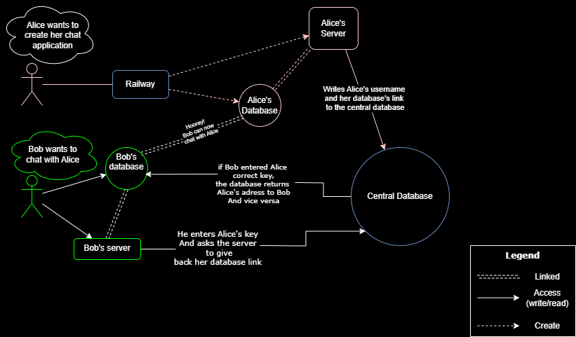

How OpenChat Works
OpenChat is designed as a decentralized messaging application that puts security and privacy first. It leverages a distributed architecture to ensure that your messages are only accessible to you and your intended recipients.
Figure: Explanation of OpenChat's decentralized architecture
The diagram above illustrates how OpenChat facilitates secure communication between users while maintaining complete decentralization. Messages are encrypted end-to-end and never stored on central servers, ensuring your conversations remain private and secure.
Key Features
End-to-End Encryption
All messages are encrypted using state-of-the-art cryptographic algorithms, ensuring that only the intended recipients can decode and read the content.
Decentralized Architecture
OpenChat operates on a peer-to-peer network without relying on central servers for message routing, making censorship and surveillance significantly more difficult.
Secure File Sharing
Share files of any size securely with other users through our BackBlaze integration, maintaining the same level of encryption and privacy as your messages.
Secure File Sharing with BackBlaze
How File Sharing Works
OpenChat uses BackBlaze B2 Cloud Storage as a secure file storage solution. Here's how the process works:
- When you share a file, it's first encrypted on your device using the same encryption keys used for your message content.
- The encrypted file is then uploaded to a private BackBlaze bucket dedicated to your conversation.
- A secure access token is generated and shared with your recipient through the encrypted message channel.
- The recipient can access and download the file using this token, which is valid only for a limited time.
- Once downloaded, the file is decrypted locally on the recipient's device.
Security Features
Our BackBlaze integration includes several security measures:
- Client-side encryption ensures files are encrypted before leaving your device
- Time-limited access tokens prevent unauthorized access
- Automatic file expiration options for sensitive content
- No metadata storage in central databases
Quick Deployment with Railway
Getting your own instance of OpenChat up and running is simple with our Railway template. Railway is a modern platform for deploying applications with minimal configuration.
One-Click Deployment
Deploy your own OpenChat instance with a single click:
Deploy on RailwayConfiguration Options
The Railway template comes pre-configured with sensible defaults, but you can customize various aspects:
- Connection pool size and timeout settings
- Storage options and retention policies
- Authentication methods and security parameters
- BackBlaze integration settings
Deployment Steps
- Click the "Deploy on Railway" button above
- Sign in to your Railway account (or create one)
- Configure your environment variables (API keys, etc.)
- Click deploy and wait for the build to complete
- Access your new OpenChat instance via the provided URL